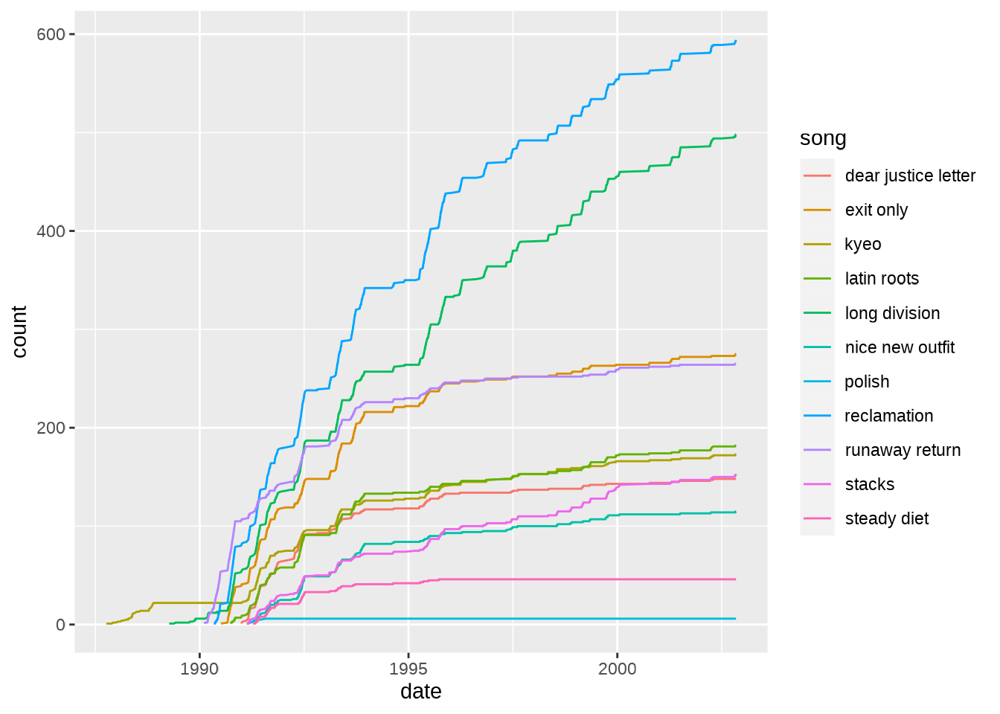

What was Fugazi’s biggest show?
attendancedata <- othervariables %>%
filter(is.na(attendance)==FALSE) %>%
mutate(attendance = as.integer(attendance)) %>%
mutate(date = as.Date(date, "%d-%m-%Y")) %>%
mutate(year = lubridate::year(date)) %>%
select(year, date, venue, attendance)
maxattendance <- max(attendancedata$attendance)
maxattendance
#> [1] 15000
attendancedata %>%
filter(attendance == maxattendance)
#> # A tibble: 1 × 4
#> year date venue attendance
#> <dbl> <date> <chr> <int>
#> 1 2000 2000-06-04 Mission Dolores Park 15000The biggest show was the Food Not Bombs 20th Anniversary on the 4th of June 2000 at Mission Dolores Park in San Francisco, with an estimated attendance of 15000 people. It seems that the show was recorded but it is not available yet as part of the Fugazi Live Series. There is a video of the show on youtube.
What was Fugazi’s longest tour?
meanattendance <- othervariables %>%
filter(is.na(tour)==FALSE) %>%
mutate(attendance = ifelse(is.na(attendance)==TRUE, 100, attendance)) %>%
group_by(year) %>%
summarise(meanattendance = mean(attendance)) %>%
ungroup()
toursdata <- othervariables %>%
filter(is.na(tour)==FALSE) %>%
left_join(meanattendance) %>%
mutate(attendance = ifelse(is.na(attendance)==TRUE,meanattendance,attendance)) %>%
group_by(tour) %>%
filter(is.na(date)==FALSE) %>%
summarise(start = min(date), end = max(date), shows = n(), duration = as.numeric((end - start)), attendance=sum(attendance)) %>%
ungroup() %>%
arrange(desc(shows))
#> Joining, by = "year"
toursdata <- toursdata %>%
mutate(meanattendance = as.integer(attendance / shows)) %>%
arrange(start)
toursdata <- toursdata %>%
mutate(start = as.Date(start, "%d-%m-%Y")) %>%
mutate(end = as.Date(end, "%d-%m-%Y"))
toursdata$startyear <- lubridate::year(toursdata$start)
toursdata$endyear <- lubridate::year(toursdata$end)
toursdata$duration <- as.integer(toursdata$duration)
toursdata$attendance <- as.integer(toursdata$attendance)
toursdata <- toursdata %>%
arrange(desc(shows))
head(toursdata, n=10)
#> # A tibble: 10 × 9
#> tour start end shows durat…¹ atten…² meana…³ start…⁴ endyear
#> <chr> <date> <date> <int> <int> <int> <int> <dbl> <dbl>
#> 1 1990 Fal… 1990-09-01 1990-11-07 60 67 43476 724 1990 1990
#> 2 1995 Spr… 1995-05-04 1995-07-14 59 71 72134 1222 1995 1995
#> 3 1992 Spr… 1992-05-01 1992-07-11 56 71 55412 989 1992 1992
#> 4 1995 Fal… 1995-09-16 1995-11-20 50 65 68903 1378 1995 1995
#> 5 1993 Spr… 1993-04-02 1993-05-31 48 59 74550 1553 1993 1993
#> 6 1990 Spr… 1990-05-02 1990-06-30 43 59 24080 560 1990 1990
#> 7 1988 Fal… 1988-10-14 1988-12-16 39 63 7376 189 1988 1988
#> 8 1993 Fal… 1993-08-16 1993-09-29 39 44 58075 1489 1993 1993
#> 9 1991 Spr… 1991-05-01 1991-06-14 38 44 27273 717 1991 1991
#> 10 1989 Spr… 1989-04-05 1989-06-16 35 72 11162 318 1989 1989
#> # … with abbreviated variable names ¹duration, ²attendance, ³meanattendance,
#> # ⁴startyearIt looks like a tie between the 1990 Fall European Tour and the 1995 Spring/Summer European Tour, each with 58 shows. On the 1990 Fall European Tour the 58 shows were played in 67 days, compared to 71 days for the 1995 Spring/Summer European Tour. Did the 1995 tour cover a longer distance? Let’s have a look at the number of shows in each country on each of those tours.
mydf <- othervariables %>% group_by(tour, country) %>% summarise(shows = n()) %>% ungroup()
#> `summarise()` has grouped output by 'tour'. You can override using the
#> `.groups` argument.
mydf2 <- mydf %>% filter(tour=="1990 Fall European Tour" | tour == "1995 Spring/Summer European Tour") %>% pivot_wider(names_from = tour, values_from = shows)
mydf2[is.na(mydf2)] <- 0
mydf2
#> # A tibble: 21 × 3
#> country `1990 Fall European Tour` `1995 Spring/Summer European Tour`
#> <chr> <int> <int>
#> 1 Austria 3 2
#> 2 Belgium 2 2
#> 3 Denmark 1 1
#> 4 England 8 6
#> 5 France 6 10
#> 6 Germany 11 9
#> 7 Ireland 1 1
#> 8 Italy 6 10
#> 9 Netherlands 8 4
#> 10 Northern Ireland 1 1
#> # … with 11 more rowsThe 1995 tour included visits to 17 countries compared to only 16 in the 1990 tour. In 1995 Fugazi skipped Sweden and Poland but added visits to Finland, the Czech Republic and Portugal. The 1995 tour almost certainly covered a longer distance which probably explains why a few more days were required to complete it.
Leads and lags
Most Fugazi songs were performed live for some time before being released on an album or EP. These lead times were often very considerable, measured in months or years. Were there any exceptions, songs whose live launch dates lagged behind the corresponding release dates? To find out, let’s start by getting the data on the releases and the corresponding release dates.
releasedates <- releasesdatalookup %>%
select(releaseid, releasedate) %>%
mutate(releasedate = as.Date(releasedate, "%d/%m/%Y"))
mydf <- songvarslookup %>%
left_join(releasedates) %>%
left_join(songidlookup)
#> Joining, by = "releaseid"
#> Joining, by = c("song", "songid")
mydf <- mydf %>%
select(songid, song, releaseid, releasedate) %>%
arrange(songid)
head(mydf)
#> songid song releaseid releasedate
#> 1 1 23 beats off 6 1993-06-18
#> 2 2 and the same 2 1989-06-15
#> 3 3 argument 9 2001-10-16
#> 4 4 arpeggiator 8 1998-04-24
#> 5 5 back to base 7 1995-05-12
#> 6 6 bad mouth 1 1988-11-19Now let’s calculate leads and lags by getting summary data on the songs and comparing the song launch dates to the corresponding release dates.
mysummary <- Repeatr::summary %>%
left_join(mydf) %>%
mutate(lead = releasedate - launchdate) %>%
select(song, launchdate, releasedate, lead) %>%
arrange(lead)
#> Joining, by = c("songid", "song", "releaseid", "releasedate")
head(mysummary, n = 10)
#> # A tibble: 10 × 4
#> song launchdate releasedate lead
#> <chr> <date> <date> <drtn>
#> 1 styrofoam 1990-05-17 1990-03-01 -77 days
#> 2 foreman's dog 1998-05-01 1998-04-24 -7 days
#> 3 blueprint 1989-11-25 1990-03-01 96 days
#> 4 steady diet 1991-04-12 1991-08-01 111 days
#> 5 life and limb 2001-06-21 2001-10-16 117 days
#> 6 public witness program 1993-02-05 1993-06-18 133 days
#> 7 polish 1991-03-06 1991-08-01 148 days
#> 8 bulldog front 1988-06-15 1988-11-19 157 days
#> 9 nice new outfit 1991-02-20 1991-08-01 162 days
#> 10 long distance runner 1994-11-27 1995-05-12 166 daysSurprisingly, there seem to be only 2 songs whose live debuts lagged behind the corresponding release dates: Styrofoam which was first played live 58 days after the launch of Repeater, and Foreman’s Dog which was first played live 4 days after the launch of End Hits. What was the average lead time for all Fugazi songs with a corresponding release?
mean(mysummary$lead)
#> Time difference of 776.4022 daysThat is over 2 years, but perhaps the mean is biased upwards by a few extreme values…
mysummary <- mysummary %>%
select(song, launchdate, releasedate, lead) %>%
arrange(desc(lead))
head(mysummary, n = 10)
#> # A tibble: 10 × 4
#> song launchdate releasedate lead
#> <chr> <date> <date> <drtn>
#> 1 the word 1987-09-03 2014-11-18 9938 days
#> 2 in defense of humans 1987-09-03 2014-11-18 9938 days
#> 3 turn off your guns 1987-09-03 2014-11-18 9938 days
#> 4 furniture 1987-09-03 2001-10-16 5157 days
#> 5 kyeo 1987-10-07 1991-08-01 1394 days
#> 6 number 5 1998-11-21 2001-10-16 1060 days
#> 7 oh 1998-11-29 2001-10-16 1052 days
#> 8 merchandise 1987-09-03 1990-03-01 910 days
#> 9 long division 1989-04-09 1991-08-01 844 days
#> 10 song #1 1987-09-03 1989-12-01 820 daysThe median lead time is probably a more reliable indicator for how long Fugazi would tend to play a song live before it featuring on a discographical release.
median(mysummary$lead)
#> Time difference of 341 daysWe have discovered several interesting things:
Styrofoam was the only Fugazi song whose live debut significantly lagged behind the corresponding release, although the live debut of Foreman’s Dog was 4 days after the release of End Hits.
The median lead time for the live performance of a Fugazi song ahead of its corresponding discographical release date was approximately 1 year: 360 days.
At which venues did Fugazi play the most?
Listening to the Fugazi Live series in chronological order, the band returns to some venues again and again over the years. Let’s have a look at the venues with the largest numbers of Fugazi shows.
venuesdata <- othervariables %>%
mutate(year = year(date)) %>%
mutate(city = ifelse(flsid=="FLS1053", "Bremen", city)) %>%
mutate(country = ifelse(flsid=="FLS1053", "Germany", country)) %>%
filter(is.na(venue)==FALSE & is.na(city)==FALSE & is.na(country)==FALSE) %>%
group_by(venue, city, country) %>%
summarize(shows = n(), from=min(year), to = max(year)) %>%
select(venue, city, country, shows, from, to) %>%
arrange(desc(shows)) %>%
ungroup()
#> `summarise()` has grouped output by 'venue', 'city'. You can override using the
#> `.groups` argument.
head(venuesdata, n = 10)
#> # A tibble: 10 × 6
#> venue city country shows from to
#> <chr> <chr> <chr> <int> <dbl> <dbl>
#> 1 Fort Reno Washington USA 12 1988 2002
#> 2 Liberty Lunch Austin USA 9 1988 1998
#> 3 40 Watt Athens USA 8 1988 1999
#> 4 9:30 Club (1980-1995) Washington USA 8 1988 1994
#> 5 First Avenue Minneapolis USA 8 1991 2001
#> 6 Maxwell's Hoboken USA 8 1988 1998
#> 7 Wilson Center Washington USA 8 1987 1997
#> 8 Masquerade Atlanta USA 7 1990 1999
#> 9 Cat's Cradle Chapel Hill USA 6 1987 1993
#> 10 dc space Washington USA 6 1987 1991The top 10 venues are all in the USA, with the top two both in Washington DC - Fort Reno and the 9:30 club are the only 2 venues with more than 10 shows. In the case of Fort Reno, Fugazi played shows there 12 times between 1988 and 2002, only missing 3 years (1990, 1992 and 1995).
Let’s have a look at the top 10 overseas venues.
overseas_venuesdata <- venuesdata %>%
filter(country!="USA" & shows>=4) %>%
arrange(desc(shows))
head(overseas_venuesdata, n = 20)
#> # A tibble: 10 × 6
#> venue city country shows from to
#> <chr> <chr> <chr> <int> <dbl> <dbl>
#> 1 Forte Prenestino Rome Italy 5 1988 1999
#> 2 Paradiso Amsterdam Netherlands 5 1990 1999
#> 3 92 Graus Curitiba Brazil 4 1994 1997
#> 4 Effenaar Eindhoven Netherlands 4 1988 1995
#> 5 Fabrik Hamburg Germany 4 1990 1999
#> 6 Powerstation Auckland New Zealand 4 1991 1997
#> 7 Riverside Newcastle-Upon-Tyne England 4 1989 1999
#> 8 Rote Fabrik Zurich Switzerland 4 1990 1999
#> 9 Schlachthof Bremen Germany 4 1990 1999
#> 10 Vera Groningen Netherlands 4 1989 1995Overseas, the venues with most Fugazi shows were Forte Prenestino in Italy and Paradiso in the Netherlands both with 5 shows. There were 9 other overseas venues with 4 shows. Proud to see that the number 1 Fugazi venue in the UK was the Newcastle Riverside, in my home town, which was where I saw them play in 1990!
Let’s have a quick look at the frequency distribution of the number of shows at each venue.
number_venues <- nrow(venuesdata)
cat(paste0("\n \n There are ", number_venues, " venues in the Fugazi Live Series data. \n \n"))
#>
#>
#> There are 753 venues in the Fugazi Live Series data.
#>
overview_venuesdata <- venuesdata %>%
group_by(shows) %>%
summarize(venues = n()) %>%
mutate(percentage = round(100*venues/number_venues, digits = 3)) %>%
arrange(desc(shows)) %>%
ungroup()
head(overview_venuesdata, n = 11)
#> # A tibble: 10 × 3
#> shows venues percentage
#> <int> <int> <dbl>
#> 1 12 1 0.133
#> 2 9 1 0.133
#> 3 8 5 0.664
#> 4 7 1 0.133
#> 5 6 3 0.398
#> 6 5 5 0.664
#> 7 4 16 2.12
#> 8 3 27 3.59
#> 9 2 98 13.0
#> 10 1 596 79.2Fugazi played at 733 venues but played at 79.4% of them only once, twice at 12.7% of venues, 3 shows at 3.4% of venues, and 4 shows at 2.3% of venues. Only 2.2% of venues had 5 or more shows.
In which city did Fugazi play at the most venues?
mydf <- othervariables
venues <- mydf %>%
group_by(city, venue) %>%
summarize(shows = n()) %>%
ungroup()
#> `summarise()` has grouped output by 'city'. You can override using the
#> `.groups` argument.
venues_per_city <- venues %>%
group_by(city) %>%
summarize(venues = n()) %>%
arrange(desc(venues)) %>%
ungroup()
venues_per_city
#> # A tibble: 406 × 2
#> city venues
#> <chr> <int>
#> 1 Washington 22
#> 2 New York 10
#> 3 Sydney 8
#> 4 Chicago 7
#> 5 Houston 7
#> 6 Berlin 6
#> 7 London 6
#> 8 Richmond 6
#> 9 San Francisco 6
#> 10 Birmingham 5
#> # … with 396 more rowsThe city where Fugazi played at the most venues was Washington DC, followed by New York, and Portland.
Did Fugazi pick songs to perform randomly?
If songs were picked at random from all available songs, the performance count for each song should build up in a similar way over time. This can be checked by plotting the cumulative performance counts for a selection of songs. First, let’s get the data into a suitable format, so that it will be easy to count the number of times each song was played.
mydf <- Repeatr1 %>% select(date, song)
mydf <- mydf %>%
group_by(date, song) %>%
summarize(count=n()) %>% ungroup()
#> `summarise()` has grouped output by 'date'. You can override using the
#> `.groups` argument.
mydf_wide <- mydf %>%
pivot_wider(names_from = song, values_from = count, values_fill = 0)
head(mydf_wide)
#> # A tibble: 6 × 133
#> date furniture in defens…¹ intro joe #…² merch…³ song …⁴ the w…⁵ turn …⁶
#> <date> <int> <int> <int> <int> <int> <int> <int> <int>
#> 1 1987-09-03 1 1 1 1 1 1 1 1
#> 2 1987-09-26 1 1 1 0 1 1 1 1
#> 3 1987-10-07 1 1 0 1 1 1 1 1
#> 4 1987-10-16 1 0 0 1 1 1 1 0
#> 5 1987-11-25 1 0 1 1 1 1 1 1
#> 6 1987-12-03 1 1 1 0 1 1 1 1
#> # … with 124 more variables: `waiting room` <int>, `and the same` <int>,
#> # `interlude 1` <int>, `interlude 2` <int>, `interlude 3` <int>,
#> # `interlude 4` <int>, `interlude 5` <int>, `interlude 6` <int>, kyeo <int>,
#> # `bad mouth` <int>, `break-in` <int>, `opening remarks` <int>, encore <int>,
#> # lockdown <int>, suggestion <int>, `lock dug` <int>, `interlude 7` <int>,
#> # burning <int>, `encore 1` <int>, `give me the cure` <int>,
#> # `interlude 8` <int>, glueman <int>, `interlude 9` <int>, …Next, let’s transform the variable for each song into a cumulative count of the number of times the song was played.
mydf_wide2 <- mydf_wide
for(colindex in 2:94) {
mydf_wide2[,colindex] <- cumsum(mydf_wide2[,colindex])
}
head(mydf_wide2)
#> # A tibble: 6 × 133
#> date furniture in defens…¹ intro joe #…² merch…³ song …⁴ the w…⁵ turn …⁶
#> <date> <int> <int> <int> <int> <int> <int> <int> <int>
#> 1 1987-09-03 1 1 1 1 1 1 1 1
#> 2 1987-09-26 2 2 2 1 2 2 2 2
#> 3 1987-10-07 3 3 2 2 3 3 3 3
#> 4 1987-10-16 4 3 2 3 4 4 4 3
#> 5 1987-11-25 5 3 3 4 5 5 5 4
#> 6 1987-12-03 6 4 4 4 6 6 6 5
#> # … with 124 more variables: `waiting room` <int>, `and the same` <int>,
#> # `interlude 1` <int>, `interlude 2` <int>, `interlude 3` <int>,
#> # `interlude 4` <int>, `interlude 5` <int>, `interlude 6` <int>, kyeo <int>,
#> # `bad mouth` <int>, `break-in` <int>, `opening remarks` <int>, encore <int>,
#> # lockdown <int>, suggestion <int>, `lock dug` <int>, `interlude 7` <int>,
#> # burning <int>, `encore 1` <int>, `give me the cure` <int>,
#> # `interlude 8` <int>, glueman <int>, `interlude 9` <int>, …Now, we can reformat the data again to make it a long list of song counts that show how the number of times each song was performed built up over time.
mydf_long <- mydf_wide2 %>%
pivot_longer(!date, names_to = "song", values_to = "count") %>%
filter(count>0)
head(mydf_long)
#> # A tibble: 6 × 3
#> date song count
#> <date> <chr> <int>
#> 1 1987-09-03 furniture 1
#> 2 1987-09-03 in defense of humans 1
#> 3 1987-09-03 intro 1
#> 4 1987-09-03 joe #1 1
#> 5 1987-09-03 merchandise 1
#> 6 1987-09-03 song #1 1Now we are in a position to graph the data so see how the performance counts evolved over time.
Here is a selection of interesting songs to look at. It would be too cluttered to plot all the songs at once!
mydf_long %>%
filter(song=="furniture" | song=="waiting room" | song=="shut the door" | song=="kyeo" | song=="polish" | song=="steady diet" | song=="smallpox champion" | song=="birthday pony" | song=="break" | song=="nightshop") %>%
ggplot(aes(date, count, color = song)) +
geom_line()
Another approach is to group the songs by release.
releases_lookup <- Repeatr1 %>%
group_by(song, release) %>%
summarize(count = n()) %>%
ungroup() %>%
select(song, release)
#> `summarise()` has grouped output by 'song'. You can override using the
#> `.groups` argument.
mydf_long <- mydf_long %>%
left_join(releases_lookup)
#> Joining, by = "song"
mydf_long %>%
filter(release=="Steady Diet") %>%
ggplot(aes(date, count, color = song)) +
geom_line()
cumulative_song_counts <- mydf_long %>%
select(date, song, release, count)Returning to the initial question of whether Fugazi picked songs randomly, the short answer is no, it doesn’t look like it. Their choices indicate preferences that became clearer over time, as can be seen in the above graphs. They sometimes stopped playing certain songs for prolonged periods of time. For instance, there were lengthy periods where KYEO and Furniture were not being played at all, and then they were brought back and played again. Other songs such as Polish were dropped and did not return. Some of the decisions of what songs to play were probably spontaneous but spontaneity is not necessarily the same as randomness, although there might be some randomness involved. Fugazi tried a different system for picking songs once but it only lasted about one song!
There is an interactive version of the above graph available here - have fun!
Mapping the Fugazi Live Series
I have tried my best to locate all the shows on an interactive, online map. I started with the information on the Fugazi Live Series website, including any flyers and comments. Google Maps would find some places quickly but others would be more difficult - many of the venues are no longer there. The search was broadened using sites like setlist.fm, which sometimes have addresses for old venues, reading online publications, and reaching out to people who might remember where the venues were located.
To the best of my knowledge, all of the shows have been located to a reasonable degree of accuracy. The results can be found here.
If you see an error that needs correcting on the map, please let me know. You can leave me a message by opening an issue on the Repeatr GitHub, by contacting me on Twitter or by contacting me on on Mastodon. Thanks.